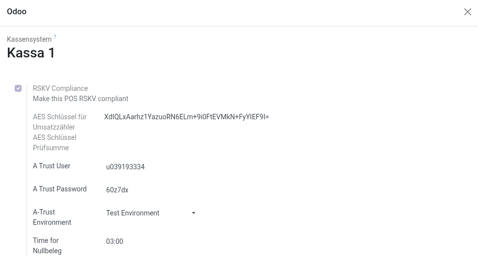
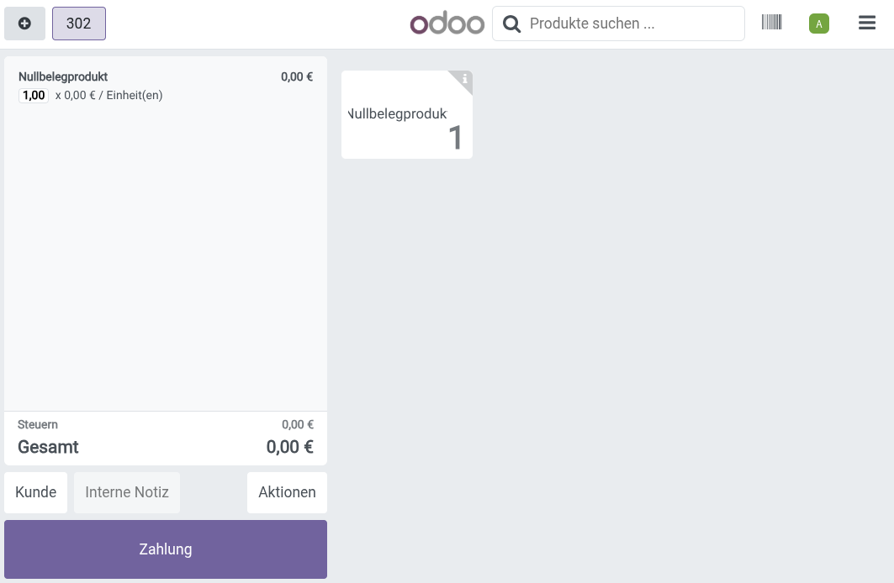
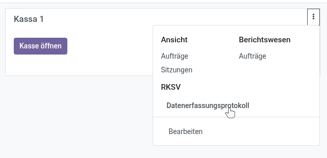

Open source Odoo addon, to enable RKSV compliance in Odoo POS.
To comply with Austrian law, a signature certificate from A-Trust is required. This certificate can be obtained from office@vorstieg.eu.
Upon saving the POS with RKSV enabled, a Startbeleg is automatically created and can be registered using the "BMF Belegchek" app.

When the RKSV option is enabled on any POS, a Nullbelegprodukt is automatically created. This product is essential for the Startbeleg, as well as for the monthly and yearly end receipts.
In situations where an officer of the financial police inspects the POS, it is necessary to create an empty receipt using this product.

An automated task (cron job) is included in this module to create the monthly Nullbeleg. It is highly recommended to configure this job to run during non-business hours to avoid interfering with active POS sessions.
According to Austrian law, all receipts must be exported and backed up once per quarter. This can be done by exporting the Datenerfassungsprotokoll for each POS.
